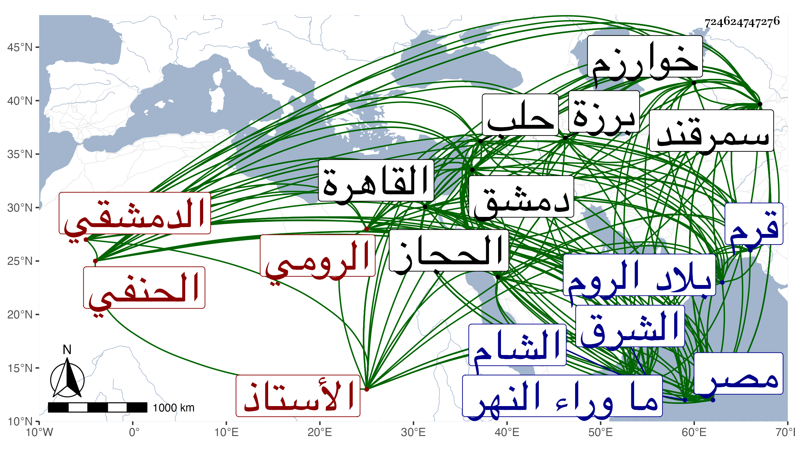

0902Sakhawi.DawLamic.ITO20230111-ara1.EIS1600.724624747276
Biography ID: 724624747276
379
أحمد بن محمد بن عبد الله بن إبراهيم بن أبي نصر محمد بن عرب شاه ابن أبي بكر الأستاذ الشهاب أبو محمد بن الشمس الدمشقي الأصل الرومي الحنفي والد التاج عبد الوهاب ويعرف بالعجمي وبابن عرب شاه وهو الأكثر وليس هو بقريب لداود وصالح ابني محمد عربشاه الهمداني الأصل الدمشقيين الحنفيين أيضا . ولد في ليلة الجمعة منتصف ذي القعدة سنة إحدى وتسعين وسبعمائة بدمشق ونشأ بها فقرأ القرآن على الزين عمر بن اللبان المقرئ ثم تحول في سنة ثلاث وثمانمائة في زمن الفتنة مع أخوته وأمهم وابن أخته عبد الرحمن بن إبراهيم بن خولان إلى سمرقند ثم بمفرده إلى بلاد الخطا وأقام ببلاد ما وراء النهر مديما للاشتغال والأخذ عن من هناك من الأستاذين فكان منهم السيد الجرجاني وابن الجزري وهما نزيلا سمرقند الأول بمدرسة أيدكوتمور والثاني باع جدا وعبد الأول وعصام الدين بن العلامة عبد الملك وهما من ذرية صاحب الهداية وأحمد الترمذي الواعظ وأحمد القصير وحسام الدين الواعظ إمام مسجد السيد الإمام ومحمد البخاري الزاهر ، ولقي بسمرقند في سنة تسع وثمانمائة الشيخ عربان الأدهمي الذي استفيض هناك أنه ابن ثلثمائة سنة فالله أعلم . وبرع في فنون واستفاد اللسان الفارسي والخط الموغولي وأتقنهما واجتمع في بلاد المغل بالبرهان الأندكاني والقاضي جلال الدين السيرامي وأخذ عنه وقرأ النحو على حاجي تلميذ السيد ، ثم توجه إلى خوارزم فأخذ عن نور الله وأحمد ابن شمس الأئمة السيراني الواعظ وكان يقال له ملك الكلام الفارسي والتركي والعربي ، ثم إلى بلاد الدشت وسراي ، وحاجي ترخان وبهاء الزاخر مولانا حافظ الدين محمد بن ناصر الدين محمد البزازي الكردري فأقام عنده نحو أربع سنين وأخذ عنه الفقه وأصوله ومما قرأ عليه المنظمة ثم إلى قرم واجتمع بأحمد ببروق وشرف الدين شارح المنار ومحمود البلغاري ومحمود اللب أبي وعبد المجيد الشاعر الأديب ، ثم قطع بحر الروم إلى مملكة ابن عثمان فأقام بها نحو عشر سنين فترجم فيها للملك غيات الدين أبي الفتح محمد بن أبي يزيد بن مراد بن عثمان كتاب جامع الحكايات ولامع الروايات من الفارسي إلى التركي في نحو مجلدات وتفسير أبي الليث السمرقندي القادري بالتركي نظما وباشر عنده ديوان الإنشاء وكتب عنه إلى ملوك الأطراف عربيا وشاميا وتركيا فبالعجمي لقرا يوسف ونحوه وبالتركي لأمراء الدشت وسلطانها وبالمغلي لشاروخ وغيره وبالعربي للمؤيد شيخ ، كل ذلك مع حرصه على الاستفادة بحيث قرأ المفتاح على البرهان حيدر الخوافي وأخذ عنه العربية أيضا فلما مات ابن عثمان رجع إلى وطنه القديم فدخل حلب فأقام بها نحو ثلث سنة ثم الشام وكان دخوله لها في جمادى الآخرة سنة خمس وعشرين فجلس بحانوت مسجد القصب مع شهوده يسيرا لكون معظم أوقاته الانعزال عن الناس وقرأ بها على القاضي شهاب الدين ابن الحبال الحنبلي صحيح مسلم في سنة ثلاثين فلما قدم العلاء البخاري سنة اثنتين وثلاثين مع الركب الشامي من الحجاز انقطع إليه ولازمه في الفقه والأصلين والمعاني والبيان والتصوف وغيرها حتى مات وكان مما قرأ عليه الكافي في الفقه والبزدوي في أصوله ، وتقدم في غالب العلوم وإنشاء النظم الفائق والنثر الرائق وصنف نظما وثنرا مرآة الأدب في علم المعاني والبيان والبديع وسلك فيه أسلوبا بديعا نظم فيه التلخيص عمله قصائد غزلية كل باب منه قصيدة مفردة على قافية أشار إليه شيخنا بقوله وأوقفني على منظومة في المعاني والبيان أجاد نظمها وجعل كل باب قصيدة مستقلة غزلا يؤخذ منه مقصد ذلك الباب انتهى ، ومقدمة في النحو وعقود النصيحة والرسالة المسماة العقد الفريد في التوحيد ، ونثرا تاريخ تمولنك سماه عجائب المقدور في نوائب تيمور وفاكهة الخلفاء ومفاكهة الظرفاء وخطاب الأهاب الناقب وجواب الشهاب الثاقب والترجمان المترجم بمنتهى الأرب في لغة الترك والعجم والعرب . وأشير إليه بالتفنن حتى كان ممن يجله ويعترف له بالفضيلة شيخنا وأثنى على نظمه التلخيص كما قدمته ، بل كتب عنه من نظمه ليدخله في البلدانيات فقال أنشدني بمنزلة برزة بالقرب من قرية القابون التحتاني في سابع رمضان سنة ست وثلاثين لنفسه :
| السيل يقلع ما يلقاه من شجر | بين الجبال ومنه الأرض تنفطر |
| حتى يوافي عباب البحر تنظره | قد اضمحل فلا يبقى له أثر |
مع حرص صاحب الترجمة حين كونه بالقاهرة على ملازمته والاستفادة منه بل امتدحه بقصيدة بديعة أتى فيها بألغاز وتعام وأهاج وجناسات وتلعب فيها بضروب الأدب أودعتها الجواهر والدرر سمعتها منه ومن لطيف أبياتها بيتا جمع فيه حروف الهجاء وهو :
| خض بحر لفظ حديثه تغش العلا | واجزم بصدقك ناطقا إذ تسند |
وبيت عاطل :
| العالم العلم الإمام لدى العلا | العامل الحكم الهمام الأوحد |
وبيت شطره الأول مما يستحيل بالانعكاس وشطره الثاني عاطل مع كونه مما لا يستحيل أيضا فالأول مركب من آمن والثاني من أحمد وهو :
| نم آمنا من نم انما آمن | دم حامدا ما أم آدم أحمد |
وكثر اجتماعهما وطرح شيخنا عليه من الأسئلة التي فيها من الفكاهة والمداعبة مما تعرف منه الملاءة والقدرة على التخلص منه ما أودعت منه أشياء في الجواهر عند الكلام على قوة شيخنا في التفسير وغيره رحمهما الله ، وكان أحد الأفراد في إجادة النظم باللغات الثلاث العربية والعجمية والتركية جيد الخط جيد الإتقان والضبط عذب الكلام بديع المحاضرة مع كثرة التودد ومزيد التواضع وعفة النفس ووفور العقل والرزانة وحسن الشكالة والأبهة سيما الخير ولوائح الدين عليه ظاهرة ، وقد لقيته بالقاهرة في الخانقاه الصلاحية سنة خمسين فكتبت عنه من نظمه أشياء وسمعت من لفظه العقد الفريد وعقود النصيحة وكتبهما إلي بخطه وبالغ في الأدب والتواضع . ومات بالخانقاه المذكورة في يوم الاثنين منتصف رجب سنة أربع وخمسين ودفن بتربتها والناس مشغولون في الاستسقاء عند توقف النيل غريبا عن أهله ووطنه بعد أن امتحن على يد الظاهر جقمق وطلبه لشكوى حميد الدين عليه وأدخله سجن المجرمين فدام فيه خمسة أيام ثم أخرج واستمر مريضا من القهر حتى مات بعد اثني عشر يوما عوضه الله خيرا ، وترجمته محتملة للبسط فقد كان من محاسن الزمان وممن ترجمه باختصار المقريزي في عقوده . ومما كتبته عنه لنفسه :
| قميص من القطن من حله | وشربة ماء قراح وقوت |
| ينال به المرء ما يبتغي | وهذا كثير على من يموت |
ومنه معمي :
| وجهك الزاهي كبدر | فوق غصن طلعا |
| واسمك الزاكي كمشكا | ة سناها لمعا |
| في بيوت أذن الله | لها أن ترفعا |
| عكسها صحفه تلق | الحسن فيه أجمعا |
ومنه :
| فعش ما شئت في الدنيا وأدرك | بها ما شئت من صيت وصوت |
| فحبل العيش موصول بقطع | وخيط العمر معقود بموت |
ومنه :
| وما الدهر إلا سلم فبقدر ما | يكون صعود المرء فيه هبوطه |
| وهيهات ما فيه نزول وإنما | شروط الذي يرقى إليه سقوطه |
| فمن صار أعلى كان أوفى تهشما | وفاء بما قامت عليه شروطه |
وترجمه بعضهم فقال : العلامة أحد أفراد الدهر في الفضل والسجع وعلم المعاني والبيان والبديع والنحو والصرف والنظم والنثر ، كان ممن أسر مع اللنك ونقل إلى سمرقند ثم خرج منها في سنة إحدى عشرة وجال ببلاد الشرق ورجع إلى دمشق في سنة خمس وعشرين فأقام بها مدة يتكسب بالشهادة في بعض حوانيتها ، وقدم القاهرة في سنة أربعين وصنف عجائب المقدور في نوائب تيمور من ابتدائه إلى انتهائه أبان فيه عن فضل كبير وملكة للسجع وغزارة اطلاع بحيث لخصه المقريزي وترجم مؤلفه فقال : نثره سجعا فعلا ووشحه بالأشعار فحلا إلى أن قال لأنه بحر بلاغة وفصاحة أنشدنا كثيرا من شعره وله معرفة بالفقه واللغة ولكن الغالب عليه الأدب ، وله نظم كثير منه كتاب مرآه الأدب يشتمل على المعاني والبيان والبديع وهو نظم بطريقة الغزل يكون نحو ألفي بيت وكتاب في علم النحو نظمه بطريقة الغزل أيضا نحو مائتي بيت وقصيدة غزلية في الصرف بديعة مدح بها بعض أعيان الدولة وعقيدة في نحو مائتي بيت وشرحها في مجلد وخطاب الإهاب الناقب وجواب الشهاب الثاقب بينه وبين البرهان الباعوني وحميد الدين القاضي أبان فيه عن حفظ كثير للغة وكثرة اطلاع وغزارة فضل وسبب وضعه أن الباعوني كتب له بستة أبيات التزم فيها بالظاء الممالة أولها :
| أأحمد لم تكن والله فظا | ولكن لا أرى لي منك حظا |
واستوفى كثيرا من اللغة وكان قد وقع بينه وبين حميد الدين فحصل للشهاب ستة أخرى قبل نظره في كتب اللغة وعملها في ستة أبيات فعجب من كثرة اطلاعه وسعة دائرته ثم كتب إليه بأبيات التزم فيها الراء قبل الألف والراء بعدها أولها :
| من مجيري من ظلوم منه | أبعدت فرارا |
واستوفى ما في الباب قال الشهاب فلم أجد له قافية فكتبت له على لسان حميد الدين قصيدة بغدادية أولها :
| أي خداوند عجعبوا | عن موالاة التناغي |
فلم يقدر على الجواب بمثلها وكتب إلي بقوله :
| يا شهاب الدين يا أحمد يابن عرب شاه |
واستوفى القافية فظفرت بأشياء تركها فقلت :
| قد أتى الفضل عليه | حلل اللطف موشاه |
فتعجب من سعة دائرته وكثرة اطلاعه ثم قال له أنا والله ما عرفتك إلا الآن قال فقلت له والله وإلى الآن ما عرفتني وطال الجواب بينهما على هذا المنوال حتى ألف من ذلك مجلدا فمن ذلك ما كتب به البرهان :
| ابن عرب شاه كف عني | أولا فخذ ما يجيك مني |
| واعلم بأني خصم ألد | الشر دأبي والمكر فني |
| خلفي رجال لهم مجال | في الحرب لا يخلفون ظني |
إلى آخرها ومن جملة المراسلات أن البرهان أرسل إليه بعشرة أبيات التزم فيها الباء والتاء واستوفى ما في الصحاح أولها :
| إن الذميم وأنت يا | هذا به عين الخبير |
واستوفى القوافي وظن أني لم أجد قافية فأجبته وآخر الأمر توجه حميد الدين إلى مصر وشكاهما إلى السلطان وقال له البرهان هجاني فلم يرد عليه إلا بقوله يكتب له من اليوم بكفه عن هجائك فلما خرج قال السلطان للشمس الكاتب إن الباعوني رجل جيد لولا أنه عرف منه شيئا ما قاله ، وألغز إليه أبو اللطف الحصكفي فأجابه بعد أن أجاب شعراء القاهرة بغير المراد ثم ألغز هو إليه وأجابه بما لم أطل بإيراده هنا ، وشعره كثير جدا وتصنيفه الماضي فاكهة الخلفاء ومفاكهة الظرفاء في مجلد ضخم فيه عجائب وغرائب على لسان الحيوانات من أواخر ما ألف ، ولما دخل مصر بعد الخمسين في الطاعون وجد غالب بيت الكمال بن البارزي مات كزوجته وأخته فرثاهم بقصيدة طنانة على عدة قواف وأظهر في مخالصها من كل قافية إلى الأخرى قوة عجيبة وملكة للنظم لا ينهض غيره لشق غبارها من قافية اللام إلى قافية الألف إلى الهاء إلى غيرها تزيد على سبعين بيتا أولها :
| إلام الدهر يردي بالكمال | ويوذي بالردى أهل الكمال |
